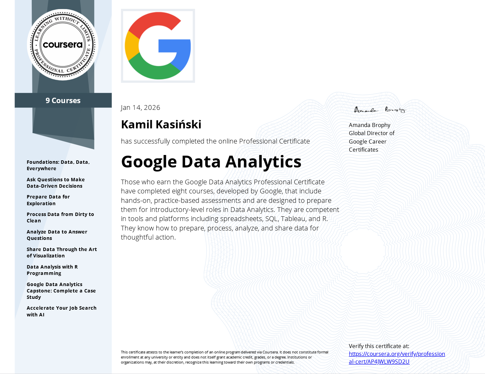
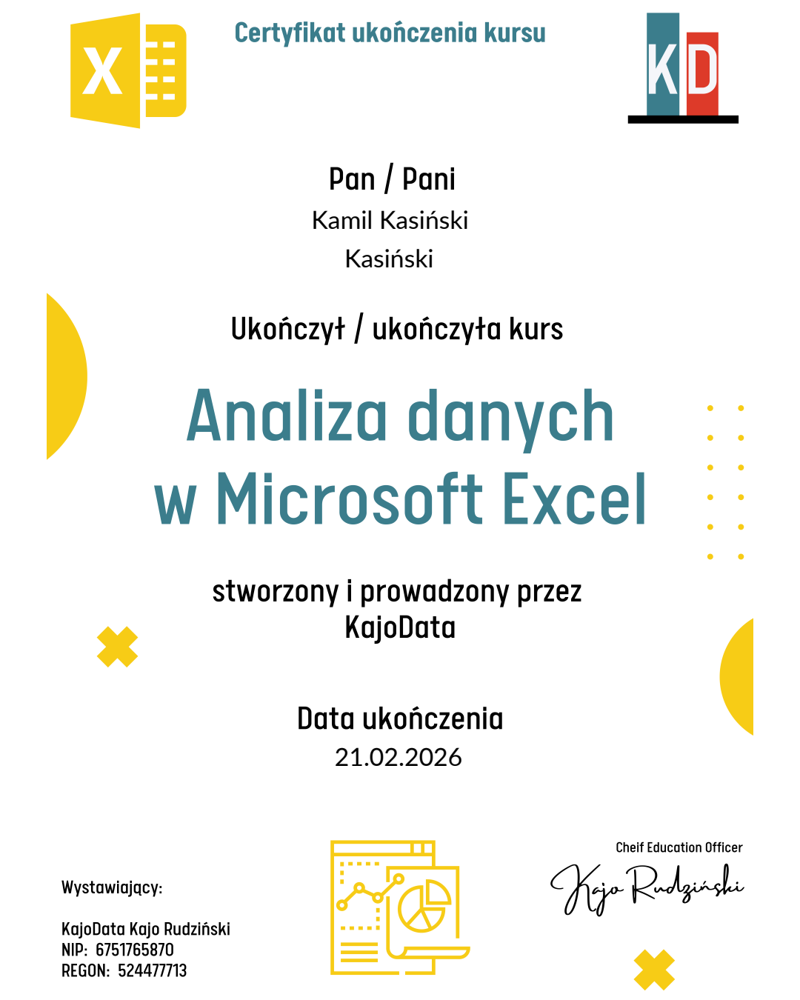
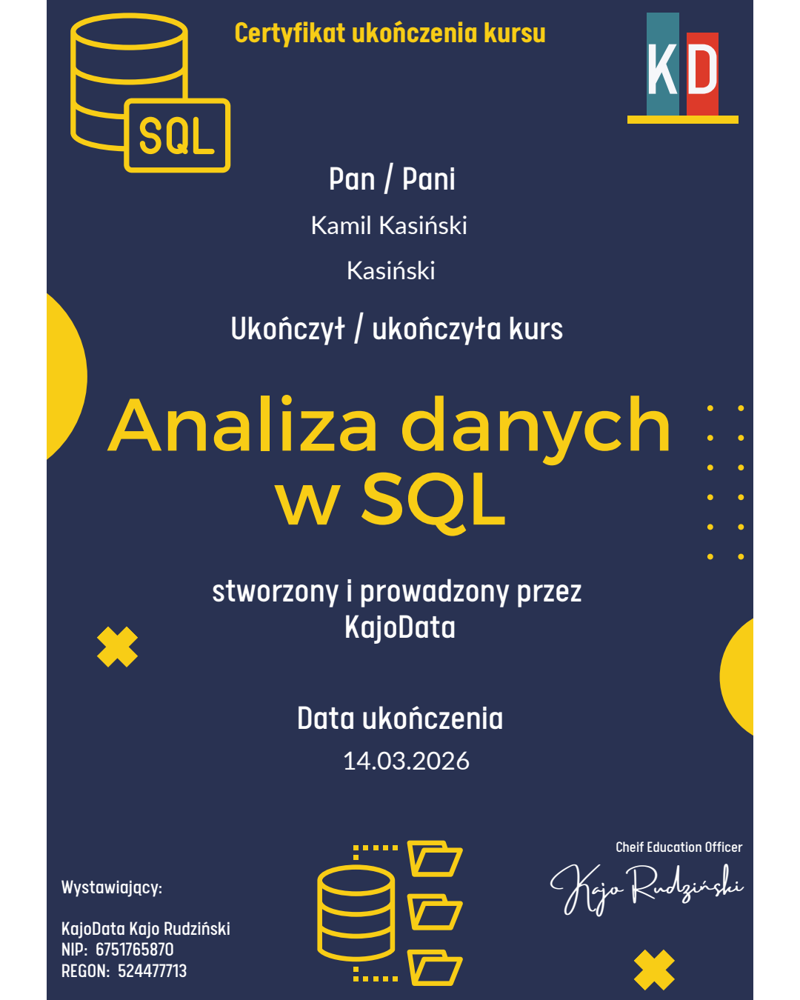
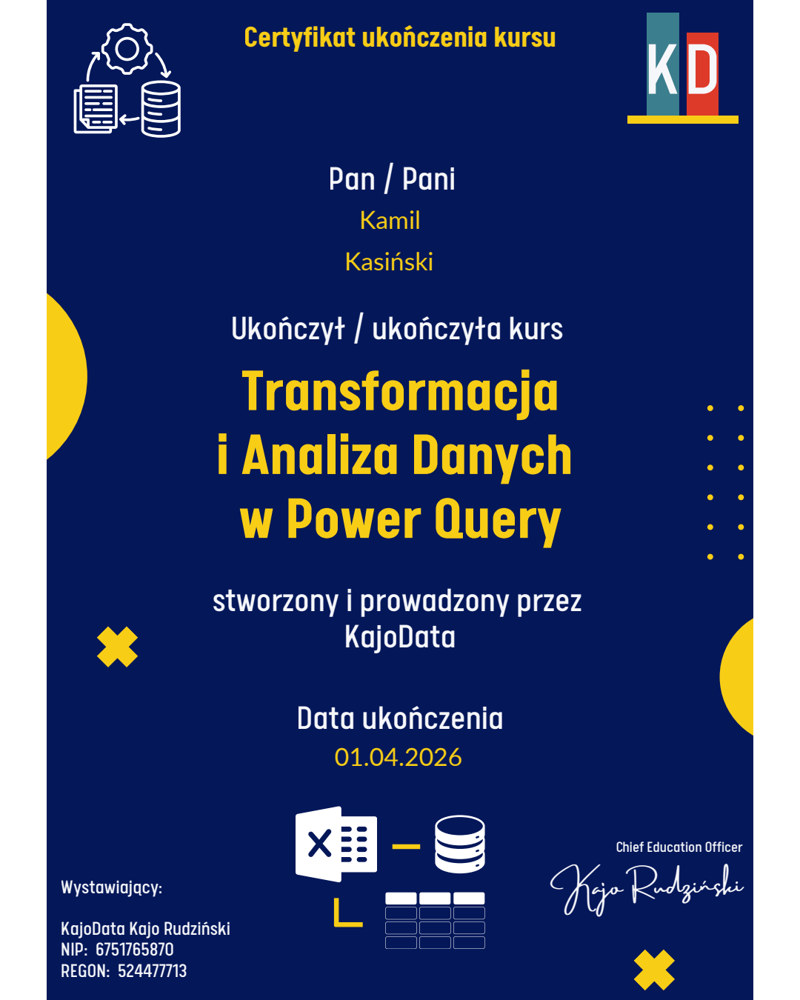

Google Data Analytics
Profesjonalny certyfikat Google potwierdzający kompetencje w przygotowaniu, przetwarzaniu i analizie danych na poziomie zawodowym...
Nieustannie podnoszę swoje kompetencje, aby dostarczać analizy najwyższej jakości.

Profesjonalny certyfikat Google potwierdzający kompetencje w przygotowaniu, przetwarzaniu i analizie danych na poziomie zawodowym...

Na kurs Analiza danych w Microsoft Excel składała się nauka formuł, tabele przestawne, podstawy przygotowania, czyszczenia i analizy danych...

Kompleksowy kurs z zakresu zaawansowanej analizy danych w środowiskach MySQL oraz PostgreSQL...

Kompleksowe szkolenie z zakresu automatyzacji procesów ETL w środowisku Excel i Power BI...